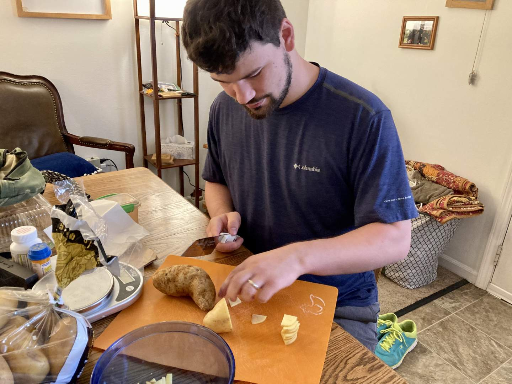
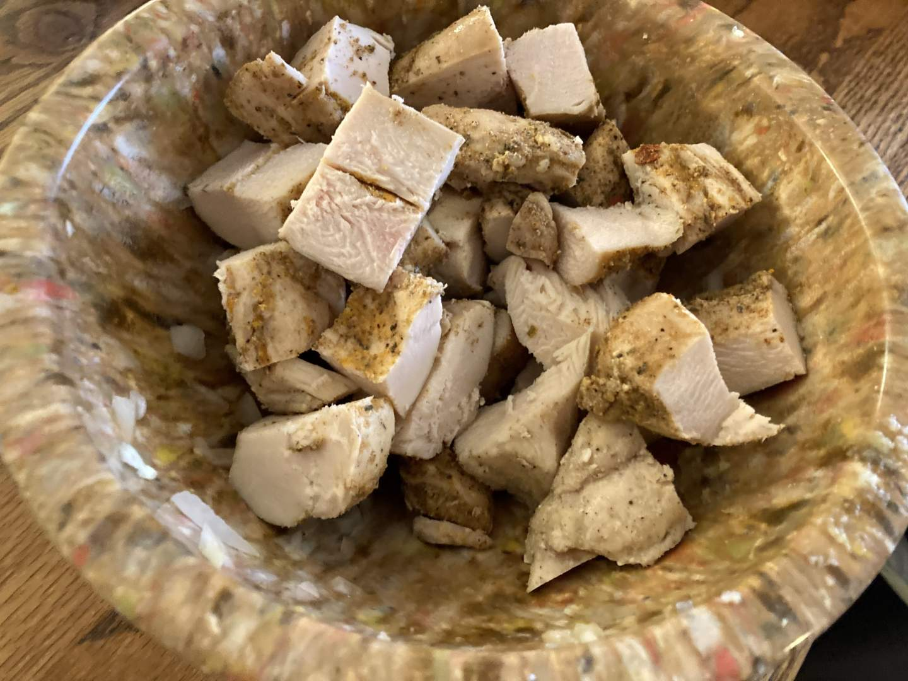
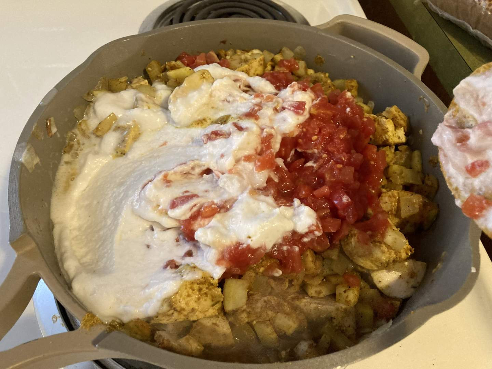
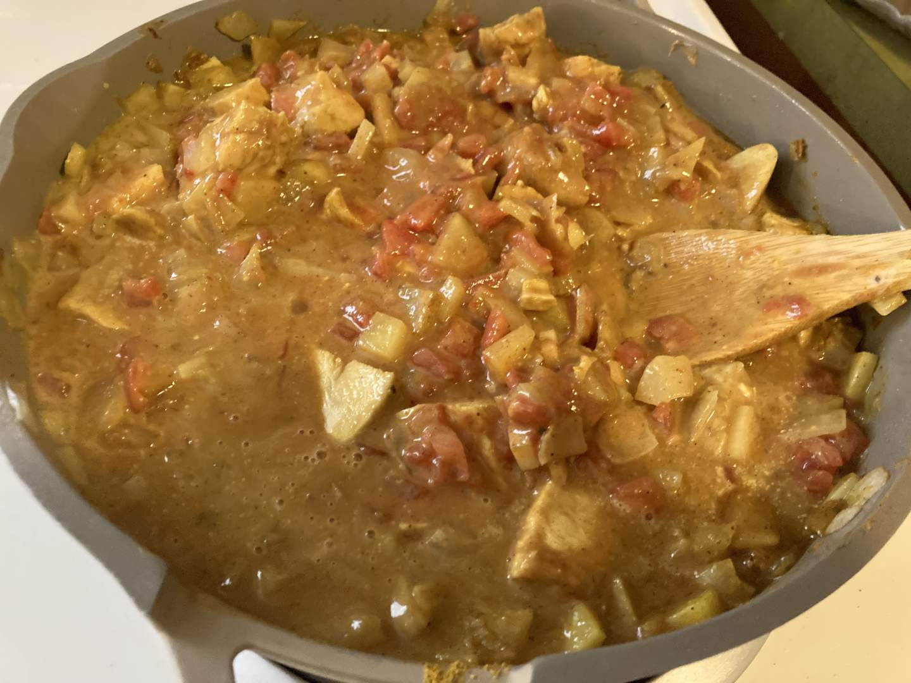
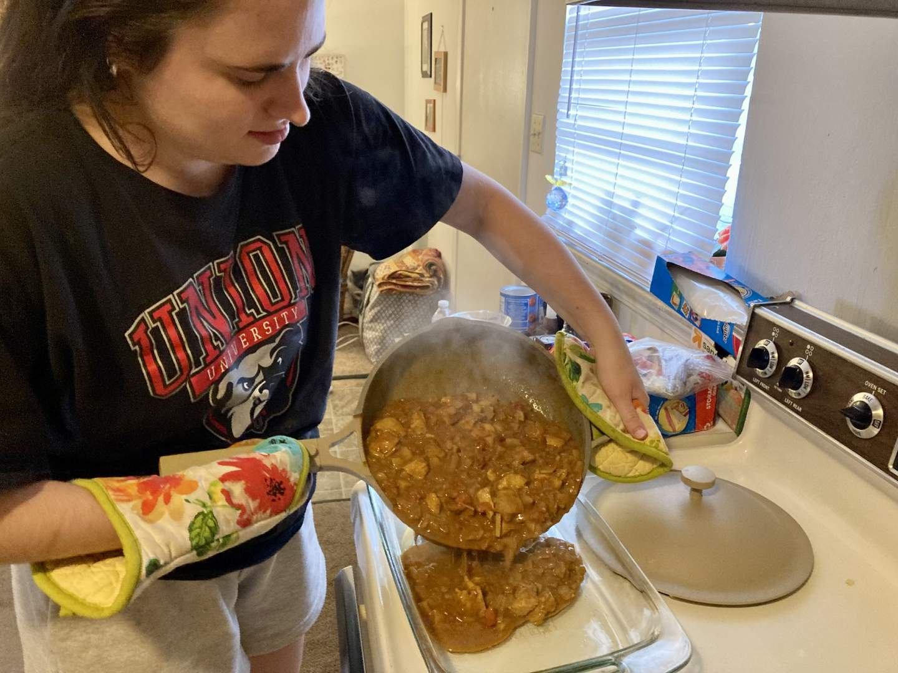
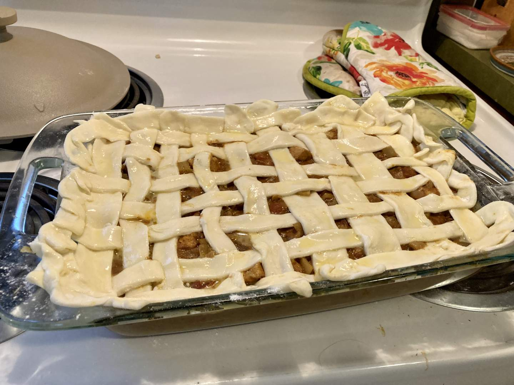
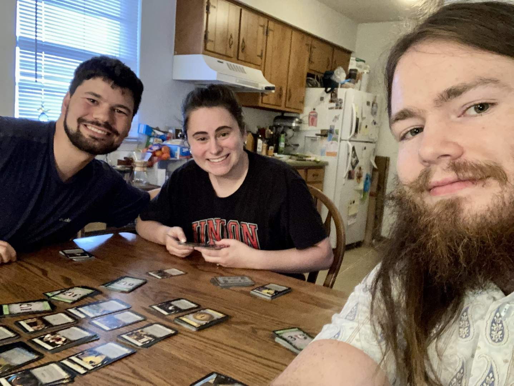
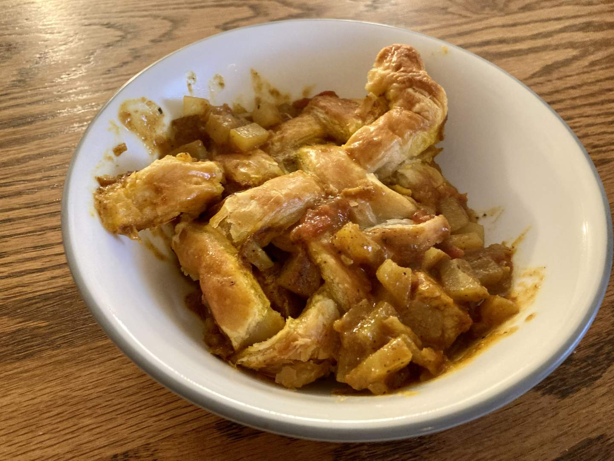

Pie 49: Chicken Curry
2024-06-08Recipe from Cooking and Cussing.
Taste:
Difficulty:
Vibes:
Suggested pairing: friends and the card game Dominion
After the delicious success of our chicken pot pie (Pie 23), I wanted to bake something new in the same vein. Many recipes exist for chicken curry pot pies on the web and I found one that used a casserole dish (for lots of leftovers) and store-bought puff pastry crust. I had never cooked with puff pastry before and wanted to give it a shot--without doing all the work myself. Yes, I was lazy. After almost 50 pies with homemade crusts I took a shortcut. Sue me.
 Our good friends from college, Malachi and Collette Gorga, were in town the weekend of June 8th, 2024. Due to an unexpected family emergency, Katie Beth was in Tennessee so my two friends and I were on our own with a pile of curry pie ingredients.
I delegated potato slicing to Malachi (which--according to him--was difficult as the russets were “hard to cut”). The chicken slicing was assigned to Collette.
 I prepared a spiced curry with tomatoes, onion, and coconut milk. We boiled the potatoes in the sauce until they were reasonably soft and added the cooked chicken.
Collette poured the whole mixture into a dish.
We all worked together to weave a lattice crust from strips of pastry and brush it with egg.
While the pie was baking we enjoyed a game of Dominion.
After a bake of 40 or so minutes the pastry had turned a delectable golden brown (due to the generous egg wash). The taste was quite good despite being a bit light on spice. All, however, agreed the curry needed more salt. I heartily recommend the idea of a chicken curry pot pie but advise any copy-cats to find a different recipe or at least use more salt.